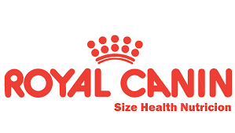

En 1967 un veterinario francés fabrica el primer alimento para perros de Royal Canin en Gard, Francia. En 1968, se crea Royal Canin como Compañía, para la investigación y el desarrollo de nuevos productos. En 1970 lanza su primera gama completa de alimentos para perros y cachorros y se funda la filial española, Royal Canin Ibérica. En 1972, Royal Canin es adquirida por la empresa Guyomarch, y comienzan a desarrollar nuevas gamas de productos. En 1990, el banco francés BNP, compró el Grupo Guyomarc'h. Desde 2002, Royal Canin forma parte del grupo americano Mars Incorporated, perteneciente a la familia Mars, fundadora de la empresa. En 2014 Royal Canin es elegida como una de las 10 mejores empresas para trabajar en España, en la categoría de 100 a 249 empleados, por el ranking Best Work Places elaborado por la consultora Great Place to Work.
